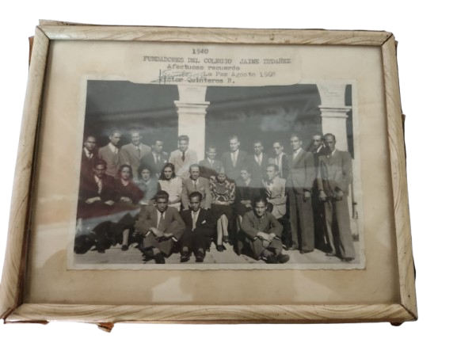

Reseña Historica y Fundacion del Colegio Nacional Jaime de Zudañez
El Colegio Nacional Jaime de Zudañez, se fundo el 5 de febrero de 1940 con el nombre de Colegio
Secundario "Charcas", por iniciativa del profesor Saul Mendoza, entonces director de la Escuela
Normal de Maestros; despues, se realizo la segunda fundacion, el 25 de Mayo de 1940, con el nombre
de Colegio Nacional "Jaime de Zudañez", habiendo sido nombrado como primer director, el profesor
Raul Bravo.
Entre los profesores fundadores tenemos a: Ernesto Ayala, Roberto Alvarado, Angel Mendoza, Renato
Coca, Antonio Soto, Nestor Paniagua, Walter Sandi, Elena Pereira, Lucio Hinojosa, Hilda Perez,
Maria Barron, M. Pacheco, Miguel Subirana, Emma Fernandez, Roger Sandi, V. Quinteros, M. Jurado,
R. Arana.
En principio, el colegio, no conto con una infrestructura propia, pero gracias a gestiones
realizadas por las autoridades de la epoca, se adquirio el inmueble que actualmente ocupa, el año
1947 estando como director Daniel Godoy, se hizo una remodelacion.
Por sus aulas, han pasado varias generaciones de jovenes con dedicacion, que hoy trabajan en bien
del pais, como siempre lo hizo el joven zudañence

|
Acta de Fundacion del Colegio Nacional Jaime de Zudañez
En la ciudad de Sucre, Capital de la República, a horas 9:00 del día 25 de mayo del año mil
novecientos cuarenta, reunidos el Sr. Jefe del Distrito Escolar, Victorino Vega, el Director
de la Escuela Nacional de Maestros, señor Saúl Mendoza, el Director propietario del
establecimiento señor Raúl Bravo P., los señores profesores de las distintas asignaturas,
el Secretario y Regente del mismo y alumnado de los seis cursos.
Declaran
1° Que en homenaje a la gloriosa efemérides del Departamento de Chuquisaca se consagra el
nombre del patriota Don “Jaime Zudáñez” como perteneciente a la denominación del colegio.
2° Que la fecha de fundación será la del 25 de mayo del presente año debiendo recordársela
en lo sucesivo con un acto especial.
3° Que el padrino oficial del establecimiento será nombrado en Consejo de Profesores.
En consecuencia los señores anteriormente nombrados firman y ratifican la presente acta.
|
Banda de Guerra
Reseña Historica

Acta de Fundacion
En la Ciudad de Sucre por iniciativa propia de la asignatura de Educacion Musical, un 25 de Mayo de
1999 se conformo la Banda de guerra estudiantil del colegio Jaime de Zudañez con el instrumento prestado
y alquilado por parte de los alumnos participantes, y la primera presentacion fue para el 5 de agostode 1999
como estreno oficial, para la gestion 2000, los padres de familia aportaron 5bs por alumno on el cual se compro
algunos instrumentos a medio uso, de esa manera se tiene el instrumental actualmente.
El apoyo de parte de la Direccion y el personal docente fue muy positiva, en forma especial la presencia de la
junta escolar Sr. Juan Quispe quien personalmente compro cada uno de los instrumentos.
En la gestion 2001 se compro tres bajos y una trompeta.
En la gestion 2002 a traves de la coision de padres de Primaria y el director Prof. Juuan Vedia se adquirio una
trompeta, un tambor, un par de platillos de bronce, un bombo grande y dos atriles.
Se tiene un nuevo traje de uniformes color blanco con cascos rojos que es el esfuerzo de la comision de apoyo
conformada por las Prof. Lourdes Gallo, Yaneth Quiroga y Lucia Taboada, implementando el el bloque de porta banderas.
Actualmente se tiene dos bandas: La Banda de Musica Estudiantil y La Banda de Guerra, yse tiene un estantarde
rotatorio como primer puesto de la gestion 2001 en ek Segundo Concurso de Bandas auspiciado por la Direccion
de Deportes de Chuquisaca.
En la gestion 2003 se compro un arbol de campanas y una guaripola nueva, los estudiantes de la banda donaon un
arbol de campanas hechizo.
Alumnos Fundadores
- Ecos Douglas
- Gonzales Miguel Angel
- Ecos Dimar
- Mendoza Nelson
Directores
- Prof. Edmundo Espada
- Prof. Vera Cruz Rivas
- Comision de Apoyo del Persona Docente
- Junta Escolar de Padres de Familia
- Almnos Participantes
Sucre 17 de Abril de 2002
Coordinacion, Organizacion y Direccion.
|
Participacion en Concursos
La banda de guerra y La Banda de Musica del Colegio Zudañez se ha conformado pra resalta su participacion
en los desfiles escolares, levantar en alto el civismo del estudiantado zudañence, tner una representacion
en los desfiles y concursos de bandas y actividades culturales.
- Gestion 2000
1er lugar en el concurso de Bandas Auspiciado por la Direccion de Educacion (Estadium Patria)
- Premios Obtenidos
Tres tontones redoblantes.
Dos tambores de ensayo.
|
|
- Gestion 2001
2do Lugar en el Concurso de Bndas de Musica Auspiciado por D.D.D. Chuquisaca.
1er Lugar en la Categoria Bandas de Guerra Auspiciado por la D.D.D. Chuquisaca.
- Premio Obtenido
Estandarte de Guerra.
400 Bs.
|
|
- Gestion 2002
3er Lugar en Bandas de Musica Auspiciado por D.D.D. Chuquisaca.
- Premio Obtenido
Un Bombo pequeño.
|
1er Lugar Categoria Bandas de Guerra Auspiciado por D.D.D. Chuquisaca.
- Premio Obtenido
Estandarte de Guerra.
Una trompeta Blanca.
|
|
- Gestion 2004
3er Lugar en Banda de Musica en el 1er Concurso de Banda Auspiciado por el
Reg. Sucre II de Infanteria.
- Premio Obtenido
Trofeo y Diploma.
300 Bs.
|
1er Lugar en Bandas de Guerra en el 1er Concurso de Bandas Auspiciado por el
Reg. Sucre II de Infanteria.
- Premio Obtenido
Trofeo y Diploma.
1500 Bs.
|
|
Ambos premios Entregados al director Prof. Freddy Villca y Representante de padres de Familia
Sr. Adolfo Rendon en oficinas de la Direccion Distrital en presencia de la Direccion
Distrital y Asesora Juridica en la primera quincena del mes de Septiembre del 2004.
|
Trofeos y Reconocimientos
Reconocimientos Deportivos
| Datos |
Nombre |
|
CAMPEONATO INTERCOLEGIAL NIVEL SECUNDARIO GOBIERNO AUTONOMO MUNICIPAL DE
SUCRE, GESTION ENRIQUE LEAÑOS PALENQUE 2024
|

2DO LUGAR BASQUETBOL
|
|
CAMPEONATO INTERCOLEGIAL NIVEL SECUNDARIO GOBIERNO AUTONOMO MUNICIPAL DE
SUCRE, GESTION ENRIQUE LEAÑOS PALENQUE 2024
|

1ER LUGAR FUTSAL
|
|
CAMPEONATO INTERDEPARTAMENTAL UNIDAD EDUCATIVA TECNICO HUMNISTICO
"ANTONIO QUIJARRO" BODAS DE DIAMANTE UYUNI - POTOSI 2024
|

2do LUGAR BASQUETBOL
|
|
CAMPEONATO INTERDEPARTAMENTAL UNIDAD EDUCATIVA TECNICO HUMNISTICO
"ANTONIO QUIJARRO" BODAS DE DIAMANTE UYUNI - POTOSI 2024
|

2DO LUGAR FUTSAL
|
|
CAMPEONATO INTERCOLEGIAL SUB 14 GOBIERNO AUTONOMO MUNICIPAL DE SUCRE, GESTION ENRIQUE
LEAÑOS PALENQUE 2024
|

3ER LUGAR FUTSAL
|
U. E. TECNICO HUMANISTICO DANIEL
CAMPOS "A" UYUNI 80 ANIVERSARIO.
JUEGOS DEPORTIVOS
ESTUDIANTILES INCOS 2023
|

TROFEO ROTATIVO
|
| U. E. TECNICO HUMANISTICO DANIEL
CAMPOS "A" UYUNI 80 ANIVERSARIO.
JUEGOS DEPORTIVOS
ESTUDIANTILES INCOS 2023
|

TROFEO, 1er Lugar Futsal
|
|
X JUEGOS DEPORTIVOS NIVEL
SECUNDARIA, FASE MUNICIPAL. CIR-1 GESTION 2019
|

TROFEO, 1er Lugar Futsal
|
|
PLURIS IX JUEGOS DEPORTIVOS
ESTUDIANTILES FASE DEPARTAMENTAL. GESTION 2018
|

TROFEO, 1er Lugar Futbol
|
| GOBIERNO AUTÓNOMO MUNICIPAL DE SUCRE, JUEGOS DEPORTIVOS ESTUDIANTILES PLURINACIONALES
FASE MUNICIPAL. GESTIÓN IVÁN ARCIÉNEGA C. AGOSTO 2016
|

TROFEO, 2do Lugar Voleibol
|
|
GOBIERNO AUTÓNOMO MUNICIPAL DE SUCRE, JUEGOS DEPORTIVOS ESTUDIANTILES PLURINACIONALES
FASE MUNICIPAL. GESTIÓN IVÁN ARCIÉNEGA C. AGOSTO 2016
|

TROFEO, 1er Lugar Basquetbol
|
|
LICEO MILITAR TENIENTE E. ANDRADE, 1ER CAMPEONATO TRIANGULAR DE VOLEIBOL 2016
|

TROFEO, 1er Lugar Voleibol
|
|
GOBIERNO AUTONOMO DE CHUQUISACA, VII JUEGOS DEPORTIVOS ESTUDIANTILES PLURINACIONALES NIVEL SECUNDARIO. FASE
DEPARTAMENTAL BASQUET 2016
|

TROFEO, 1er Lugar Basquet
|
|
GOBIERNO AUTONOMO MUNICIPAL DE SUCRE. JUEGOS DEPORTIVOS ESTUDIANTILES PLURINACIONALES
FASE MUNICIPAL GESTIÓN 2015.
|

TROFEO, 1er Lugar
|
|
V JUEGOS DEPORTIVOS ESTUDIANTILES PLURINACIONALES FASE MUNICIPAL NIVEL
SECUNDARIO. Gestión Arq. Moisés Torres Ch. GESTIÓN 2014
|
 TROFEO, 2do Lugar
TROFEO, 2do Lugar
|
|
V JUEGOS DEPORTIVOS ESTUDIANTILES PLURINACIONALES. FASE DEPARTAMENTAL
BASQUET NIVEL SECUNDARIO. GESTIÓN 2014
|

Trofeo, 3er Lugar
|
|
IV JUEGOS FEPORTIVOS ESTUDIANTILES PLURINACIONALES
FASE DEPARTAMENTAL NIVEL SECUNDARIO. OCTUBRE 2013
|

TROFEO, 2do Lugar Futbol de Salón
|
|
IV JUEGOS ESTUDIANTILES PLURINACIONALES FASE MUNICIPAL NIVEL SECUNDARIO,
Gestión Arq. Moisés Torres Chive. GESTIÓN 2013
|

TROFEO, 2do Lugar
|
|
IV JUEGOS DEPORTIVOS ESTUDIANTILES PLURINACIONALES FASE NACIONAL. EDUCACION
SECUNDARIA PRODUCTIVA.
|

TROFEO, 1er LUGAR FUTSAL
|
|
COPA, ESFERA, JUGADOR, ALCALDIA MUNICIPAL, LICEO MILITAR. BALONCESTO 1972.
|

TROFEO
|
|
GOBIERNO AUTONOMO MUNICIPAL DE TARIJA Y LA PROVINCIA CERCADO.
|

TROFEO
|